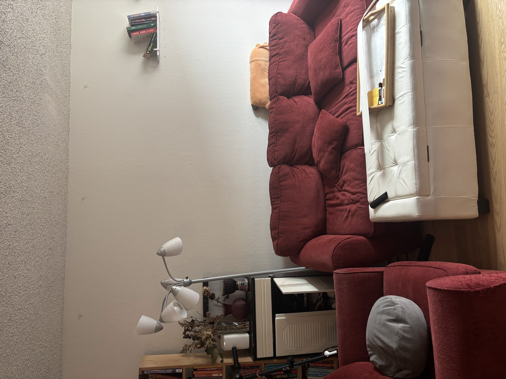
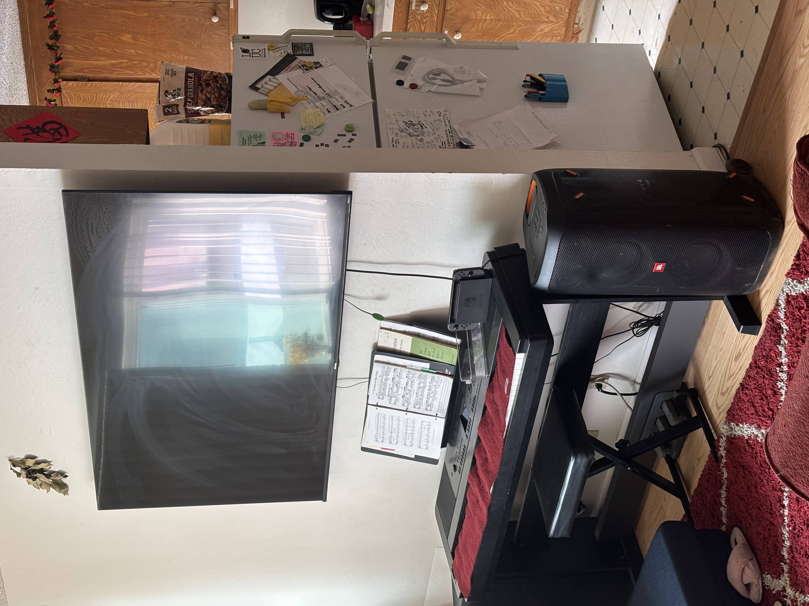
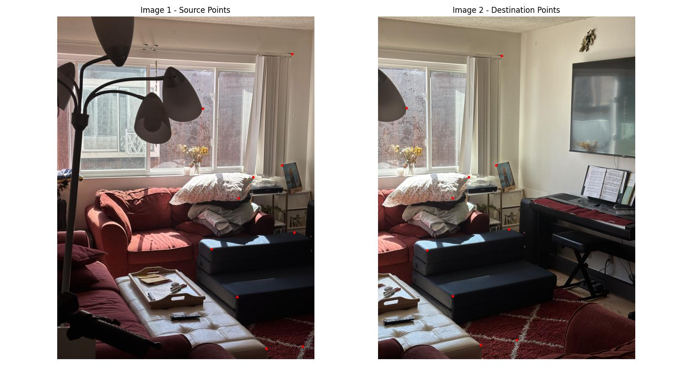
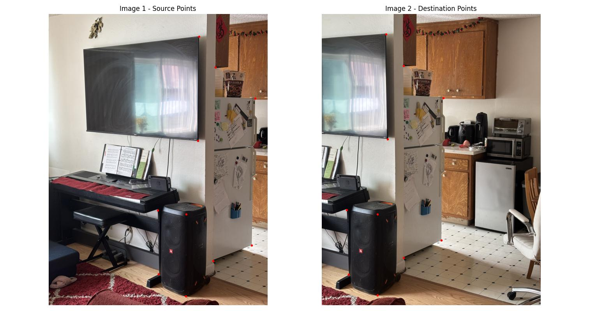
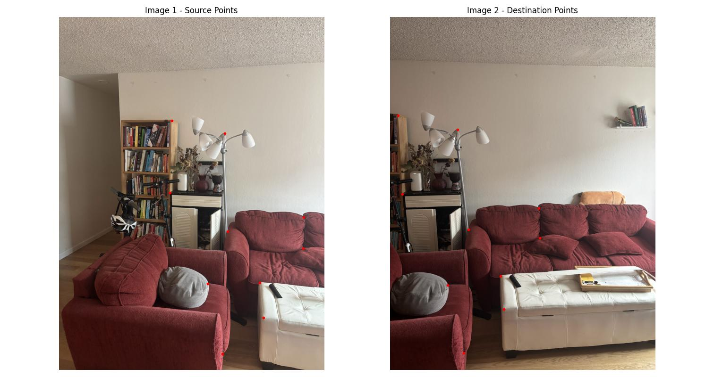
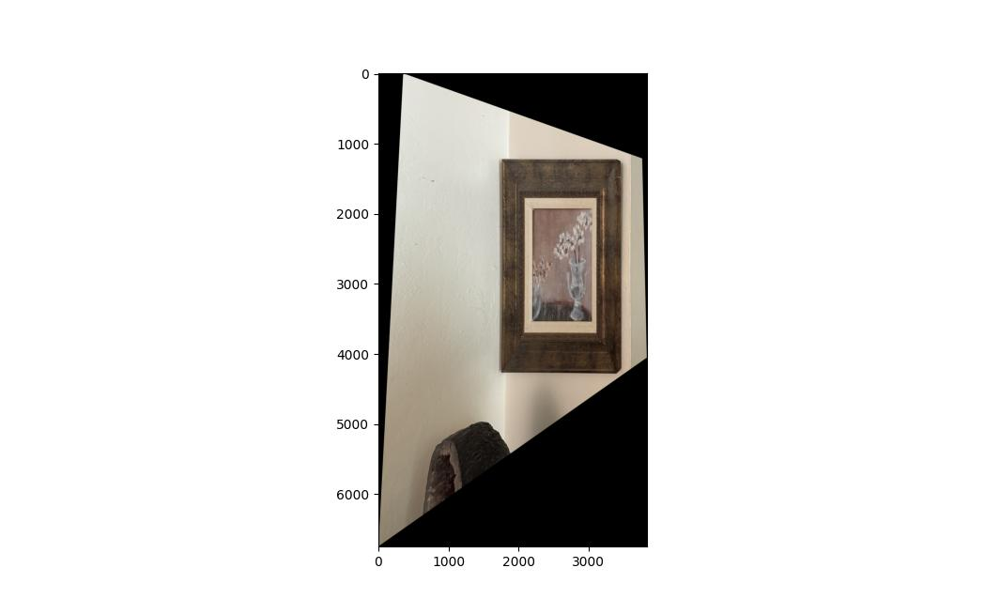
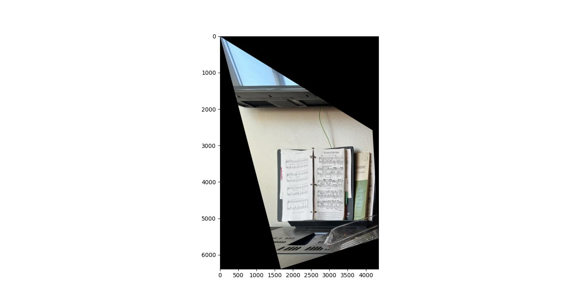
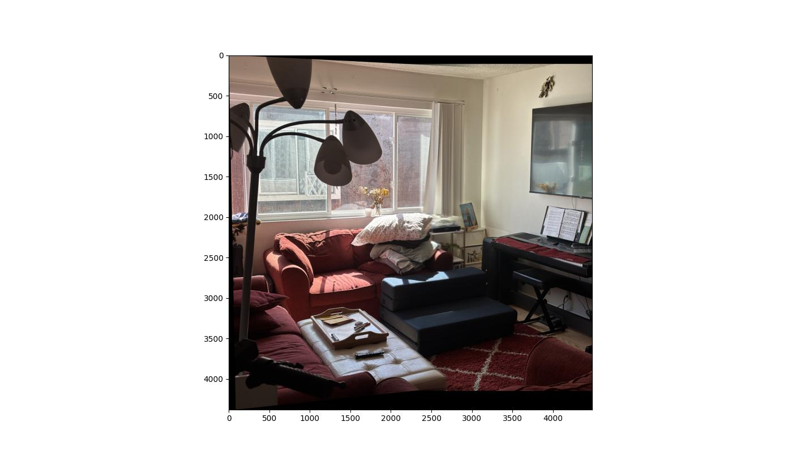
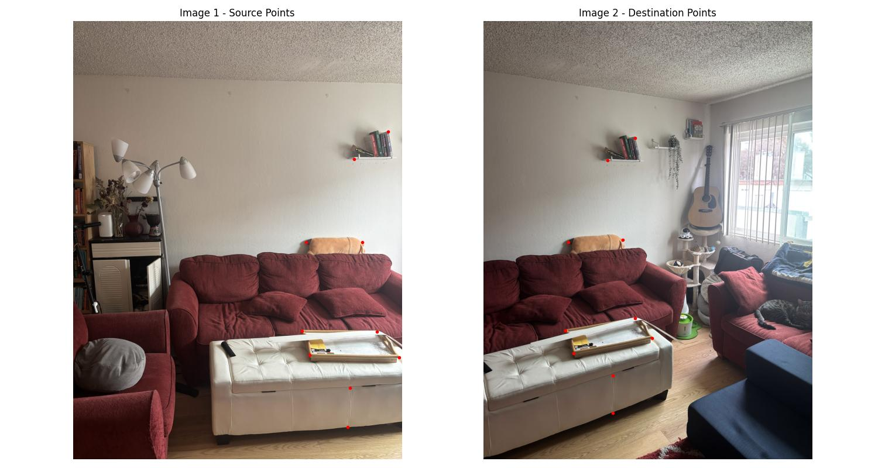

Part A.1
Here are two sets of pictures of my living room I took for the following homography and mosaicing experiments.






Here are two sets of pictures of my living room I took for the following homography and mosaicing experiments.
I derived the equations per correspondence of points using the equation p' = Hp where H represents the 9 - 1 = 8 unknown variables that determine the homography, rewritten to be a systems of equations Ah = b where the vector h holds the 8 unknowns and the vector b holds the x and y coordinates of the target coordinate per correspondence, and A is of shape 2n-1 x 8, where n is the number of correspondences, with each consecutive set of 2 adjacent rows representing the equation for the correspondence from p = (x, y) to p' = (xp, yp) with the first row of the set being ax + by + c - g * x * xp - h * y * xp = xp and the second row of the set being dx + ey + f - g * x * yp - h * y * yp = yp . Then the correspondence equations can be setup to solve for the unknowns of the homography: a, b, c, d, e, f, g, h. If the system is overconstrained, then we use Least Squares to estimate the unknowns. The following are the results of my function, which takes in im1_pts and im2_pts of ten correspondences and computes the homography matrix H:
Living Room Correspondences
For correspondence: ( 2762 , 441 ) -> ( 1067 , 1890 )
a * 2762 + b * 441 + c - g * 2762 * 1067 - h * 441 * 1067 = 1067
d * 2762 + e * 441 + f - g * 2762 * 1890 - h * 441 * 1890 = 1890
For correspondence: ( 2304 , 1887 ) -> ( 1454 , 461 )
a * 2304 + b * 1887 + c - g * 2304 * 1454 - h * 1887 * 1454 = 1454
d * 2304 + e * 1887 + f - g * 2304 * 461 - h * 1887 * 461 = 461
For correspondence: ( 2647 , 1749 ) -> ( 1390 , 1746 )
a * 2647 + b * 1749 + c - g * 2647 * 1390 - h * 1749 * 1390 = 1390
d * 2647 + e * 1749 + f - g * 2647 * 1746 - h * 1749 * 1746 = 1746
For correspondence: ( 2887 , 3883 ) -> ( 1634 , 3803 )
a * 2887 + b * 3883 + c - g * 2887 * 1634 - h * 3883 * 1634 = 1634
d * 2887 + e * 3883 + f - g * 2887 * 3803 - h * 3883 * 3803 = 3803
For correspondence: ( 1817 , 2736 ) -> ( 580 , 2749 )
a * 1817 + b * 2736 + c - g * 1817 * 580 - h * 2736 * 580 = 580
d * 1817 + e * 2736 + f - g * 1817 * 2749 - h * 2736 * 2749 = 2749
For correspondence: ( 2115 , 3297 ) -> ( 878 , 3287 )
a * 2115 + b * 3297 + c - g * 2115 * 878 - h * 3297 * 878 = 878
d * 2115 + e * 3297 + f - g * 2115 * 3287 - h * 3297 * 3287 = 3287
For correspondence: ( 2131 , 2134 ) -> ( 881 , 2134 )
a * 2131 + b * 2134 + c - g * 2131 * 881 - h * 2134 * 881 = 881
d * 2131 + e * 2134 + f - g * 2131 * 2134 - h * 2134 * 2134 = 2134
For correspondence: ( 2788 , 2537 ) -> ( 1541 , 2502 )
a * 2788 + b * 2537 + c - g * 2788 * 1541 - h * 2537 * 1541 = 1541
d * 2788 + e * 2537 + f - g * 2788 * 2502 - h * 2537 * 2502 = 2502
For correspondence: ( 2461 , 3909 ) -> ( 1208 , 3867 )
a * 2461 + b * 3909 + c - g * 2461 * 1208 - h * 3909 * 1208 = 1208
d * 2461 + e * 3909 + f - g * 2461 * 3867 - h * 3909 * 3867 = 3867
For correspondence: ( 1711 , 1082 ) -> ( 333 , 1076 )
a * 1711 + b * 1082 + c - g * 1711 * 333 - h * 1082 * 333 = 333
d * 1711 + e * 1082 + f - g * 1711 * 1076 - h * 1082 * 1076 = 1076
Resulting Homography:
[[-4.53682043e-01 7.89360698e-02 8.34484094e+02]
[-1.11469027e+00 1.79091542e-01 2.24068775e+03]
[-4.93035088e-04 7.31031407e-05 1.00000000e+00]]

Kitchen Correspondences
For correspondence: ( 2078 , 312 ) -> ( 890 , 278 )
a * 2078 + b * 312 + c - g * 2078 * 890 - h * 312 * 890 = 890
d * 2078 + e * 312 + f - g * 2078 * 278 - h * 312 * 278 = 278
For correspondence: ( 2065 , 1753 ) -> ( 913 , 1730 )
a * 2065 + b * 1753 + c - g * 2065 * 913 - h * 1753 * 913 = 913
d * 2065 + e * 1753 + f - g * 2065 * 1730 - h * 1753 * 1730 = 1730
For correspondence: ( 2854 , 1168 ) -> ( 1679 , 1159 )
a * 2854 + b * 1168 + c - g * 2854 * 1679 - h * 1168 * 1679 = 1679
d * 2854 + e * 1168 + f - g * 2854 * 1159 - h * 1168 * 1159 = 1159
For correspondence: ( 2805 , 3201 ) -> ( 1653 , 3130 )
a * 2805 + b * 3201 + c - g * 2805 * 1653 - h * 3201 * 1653 = 1653
d * 2805 + e * 3201 + f - g * 2805 * 3130 - h * 3201 * 3130 = 3130
For correspondence: ( 1509 , 2720 ) -> ( 346 , 2710 )
a * 1509 + b * 2720 + c - g * 1509 * 346 - h * 2720 * 346 = 346
d * 1509 + e * 2720 + f - g * 1509 * 2710 - h * 2720 * 2710 = 2710
For correspondence: ( 1519 , 3602 ) -> ( 371 , 3608 )
a * 1519 + b * 3602 + c - g * 1519 * 371 - h * 3602 * 371 = 371
d * 1519 + e * 3602 + f - g * 1519 * 3608 - h * 3602 * 3608 = 3608
For correspondence: ( 1900 , 2772 ) -> ( 772 , 2771 )
a * 1900 + b * 2772 + c - g * 1900 * 772 - h * 2772 * 772 = 772
d * 1900 + e * 2772 + f - g * 1900 * 2771 - h * 2772 * 2771 = 2771
For correspondence: ( 1897 , 3906 ) -> ( 772 , 3893 )
a * 1897 + b * 3906 + c - g * 1897 * 772 - h * 3906 * 772 = 772
d * 1897 + e * 3906 + f - g * 1897 * 3893 - h * 3906 * 3893 = 3893
For correspondence: ( 2304 , 735 ) -> ( 1131 , 714 )
a * 2304 + b * 735 + c - g * 2304 * 1131 - h * 735 * 1131 = 1131
d * 2304 + e * 735 + f - g * 2304 * 714 - h * 735 * 714 = 714
For correspondence: ( 2275 , 3418 ) -> ( 1134 , 3377 )
a * 2275 + b * 3418 + c - g * 2275 * 1134 - h * 3418 * 1134 = 1134
d * 2275 + e * 3418 + f - g * 2275 * 3377 - h * 3418 * 3377 = 3377
Resulting Homography:
[[ 1.14564028e+00 2.09444538e-02 -1.41079985e+03]
[ 7.05217173e-02 1.10379879e+00 -1.88662006e+02]
[ 4.16649556e-05 4.06494659e-06 1.00000000e+00]]

Left Living Room to Mid Living Room Correspondences
For correspondence: ( 1825 , 1679 ) -> ( 131 , 1588 )
a * 1825 + b * 1679 + c - g * 1825 * 131 - h * 1679 * 131 = 131
d * 1825 + e * 1679 + f - g * 1825 * 1588 - h * 1679 * 1588 = 1588
For correspondence: ( 1797 , 2846 ) -> ( 199 , 2868 )
a * 1797 + b * 2846 + c - g * 1797 * 199 - h * 2846 * 199 = 199
d * 1797 + e * 2846 + f - g * 1797 * 2868 - h * 2846 * 2868 = 2868
For correspondence: ( 2678 , 1879 ) -> ( 1094 , 1824 )
a * 2678 + b * 1879 + c - g * 2678 * 1094 - h * 1879 * 1094 = 1094
d * 2678 + e * 1879 + f - g * 2678 * 1824 - h * 1879 * 1824 = 1824
For correspondence: ( 2728 , 3472 ) -> ( 1271 , 3436 )
a * 2728 + b * 3472 + c - g * 2728 * 1271 - h * 3472 * 1271 = 1271
d * 2728 + e * 3472 + f - g * 2728 * 3436 - h * 3472 * 3436 = 3436
For correspondence: ( 3241 , 4303 ) -> ( 1788 , 4194 )
a * 3241 + b * 4303 + c - g * 3241 * 1788 - h * 4303 * 1788 = 1788
d * 3241 + e * 4303 + f - g * 3241 * 4194 - h * 4303 * 4194 = 4194
For correspondence: ( 3305 , 4866 ) -> ( 1838 , 4725 )
a * 3305 + b * 4866 + c - g * 3305 * 1838 - h * 4866 * 1838 = 1838
d * 3305 + e * 4866 + f - g * 3305 * 4725 - h * 4866 * 4725 = 4725
For correspondence: ( 2642 , 5452 ) -> ( 1189 , 5438 )
a * 2642 + b * 5452 + c - g * 2642 * 1189 - h * 5452 * 1189 = 1189
d * 2642 + e * 5452 + f - g * 2642 * 5438 - h * 5452 * 5438 = 5438
For correspondence: ( 2401 , 4312 ) -> ( 935 , 4335 )
a * 2401 + b * 4312 + c - g * 2401 * 935 - h * 4312 * 935 = 935
d * 2401 + e * 4312 + f - g * 2401 * 4335 - h * 4312 * 4335 = 4335
For correspondence: ( 3954 , 3241 ) -> ( 2406 , 3091 )
a * 3954 + b * 3241 + c - g * 3954 * 2406 - h * 3241 * 2406 = 2406
d * 3954 + e * 3241 + f - g * 3954 * 3091 - h * 3241 * 3091 = 3091
For correspondence: ( 3945 , 3745 ) -> ( 2424 , 3572 )
a * 3945 + b * 3745 + c - g * 3945 * 2424 - h * 3745 * 2424 = 2424
d * 3945 + e * 3745 + f - g * 3945 * 3572 - h * 3745 * 3572 = 3572
Resulting Homography:
[[ 1.36177512e+00 5.76739576e-02 -2.40577571e+03]
[ 1.18375936e-01 1.26834132e+00 -5.12218830e+02]
[ 7.27022885e-05 8.06239175e-06 1.00000000e+00]]

Middle Living Room to Right Living Room Correspondences
For correspondence: ( 4104 , 1438 ) -> ( 1971 , 1508 )
a * 4104 + b * 1438 + c - g * 4104 * 1971 - h * 1438 * 1971 = 1971
d * 4104 + e * 1438 + f - g * 4104 * 1508 - h * 1438 * 1508 = 1508
For correspondence: ( 4249 , 4357 ) -> ( 2188 , 4115 )
a * 4249 + b * 4357 + c - g * 4249 * 2188 - h * 4357 * 2188 = 2188
d * 4249 + e * 4357 + f - g * 4249 * 4115 - h * 4357 * 4115 = 4115
For correspondence: ( 3659 , 1779 ) -> ( 1612 , 1813 )
a * 3659 + b * 1779 + c - g * 3659 * 1612 - h * 1779 * 1612 = 1612
d * 3659 + e * 1779 + f - g * 3659 * 1813 - h * 1779 * 1813 = 1813
For correspondence: ( 3096 , 4367 ) -> ( 1173 , 4322 )
a * 3096 + b * 4367 + c - g * 3096 * 1173 - h * 4367 * 1173 = 1173
d * 3096 + e * 4367 + f - g * 3096 * 4322 - h * 4367 * 4322 = 4322
For correspondence: ( 3037 , 2887 ) -> ( 1132 , 2860 )
a * 3037 + b * 2887 + c - g * 3037 * 1132 - h * 2887 * 1132 = 1132
d * 3037 + e * 2887 + f - g * 3037 * 2860 - h * 2887 * 2860 = 2860
For correspondence: ( 2973 , 4026 ) -> ( 1063 , 4013 )
a * 2973 + b * 4026 + c - g * 2973 * 1063 - h * 4026 * 1063 = 1063
d * 2973 + e * 4026 + f - g * 2973 * 4013 - h * 4026 * 4013 = 4013
For correspondence: ( 3790 , 2891 ) -> ( 1815 , 2841 )
a * 3790 + b * 2891 + c - g * 3790 * 1815 - h * 2891 * 1815 = 1815
d * 3790 + e * 2891 + f - g * 3790 * 2841 - h * 2891 * 2841 = 2841
For correspondence: ( 3967 , 4049 ) -> ( 1971 , 3861 )
a * 3967 + b * 4049 + c - g * 3967 * 1971 - h * 4049 * 1971 = 1971
d * 3967 + e * 4049 + f - g * 3967 * 3861 - h * 4049 * 3861 = 3861
For correspondence: ( 3613 , 4789 ) -> ( 1672 , 4608 )
a * 3613 + b * 4789 + c - g * 3613 * 1672 - h * 4789 * 1672 = 1672
d * 3613 + e * 4789 + f - g * 3613 * 4608 - h * 4789 * 4608 = 4608
For correspondence: ( 3595 , 5297 ) -> ( 1681 , 5116 )
a * 3595 + b * 5297 + c - g * 3595 * 1681 - h * 5297 * 1681 = 1681
d * 3595 + e * 5297 + f - g * 3595 * 5116 - h * 5297 * 5116 = 5116
SystemError: null argument to internal routine
Resulting Homography:
[[ 1.15203274e+00 1.23621323e-02 -2.24200472e+03]
[ 8.81759785e-02 1.07632997e+00 -9.70462795e+00]
[ 6.79286778e-05 -1.34364807e-05 1.00000000e+00]]
I used inverse warping for both my implementation of Nearest Neighbor Interpolation and Bilinear Interpolation. For both methods, I computed the resulting image size by piping the four corners of the base image through the inverse homography. For Nearest Neighbor interpolation, I rounded the corresponding coordinate value I got from apply my inverse warping for each pixel of result I constructed back to the original image, and took the pixel RGB value at the nearest integer coordinate of the original image. For the Bilinear approach, I built upon the NN approach by averaging the neighbors - in the original image - of the integer-rounded result I got from applying my inverse homography on each coordinate of the resulting image I wished to construct. I found that the results didn't really seem that different unless you closely inspect the results of each method, which even then was hard to find difference. The main difference was the speed at which the methods ran. The NN method ran on average 3 times faster than my Bilinear method, without significant improvement in the quality of my result. Some potential downsides in terms of quality would be aliasing and jagged edges, pixelation on diagonals or curves, but when the image content is already low-res, and speed is important, then the tradeoffs make sense for the nearest neighbors method. The bilinear method, while it does improve the quality of the image by providing smoother transitions between pixels and reduced aliasing, does require 4 pixel lookups instead of one and more operations that keep track of the average, compared to the two rounding operations and 1 pixel lookup of nearest neighbors. However, since we are averaging values, we could introduce some slight blurring with the bilinear method. For the image rectification, I applied my homography to the four corners of the image I wish to be rectified as im1_pts, and for im2_pts, I set to be [0, 0], [a, 0], [a, b], [0, b], where a and b are the respective average widths and heights of the trapezoidal figure I wish to turn into a rectangle.
Rectification Results
Elton John Rectified Nearest Neighbors

Elton John Rectified Bilinear
Flower Rectified Nearest Neighbors
Flower Rectified Bilinear

Sheet Music Rectified Nearest Neighbors
Sheet Music Rectified Bilinear
For blending two images together after warping one image to fit the correspondences of the other, I use a simple but effective method of horizontal weighted averaging with a mask gradient from the left to the right. From my tests on the same mosaics with different masking and blending procedures, I found that this method, although lacking significant vertical blending was effective at bridging the common areas in both images, as I only started the gradient from the leftmost correspondence point and ended the gradient at the rightmost correspondence point. This meant that anything to the left of the gradient is populated purely by the left image and anything to the right of the gradient was populated purely by the right image, delegating potential ghosting to only the shared common area defined within the horizontal bounds of the correspondence points. This method worked better than the center alpha masking and gaussian blending, which either introduced significant visual artifacts even with precise correspondence point accuracy, blurring where there shouldn't be, or took 5 times as long to run for the blending, even with only 2 layers. To me, I've found that this simple method, in combination with precise correspondence between the two images, led to the least visual artifacting and best results. The most challenging part about any procedure, though, was establishing good correspondences with a large number of correspondence points.
Mosaic Results
Left of my Living room shot on an Iphone at 2x zoom
Right of my living room
Using 10 correspondences
Using horizontal weighted averaging
Left of my living room
1x zoom
Middle of my living room
Right of my living room
Left and middle living room correspondences
Middle and right living room correspondences

Mosaic Pt 1

Mosaic Pt 2
Left of my kitchen shot on an Iphone at 2x zoom
Right of my kitchen


Result with horizontal weighted averaging